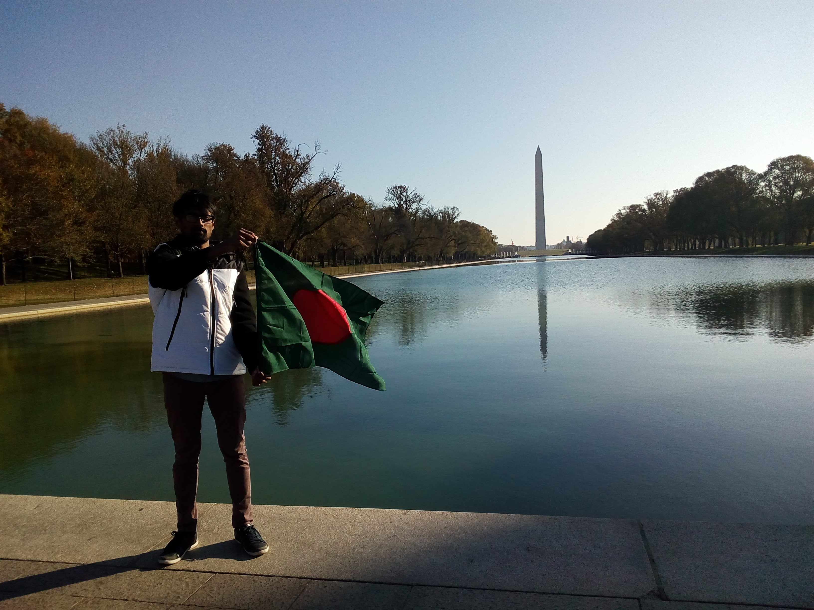
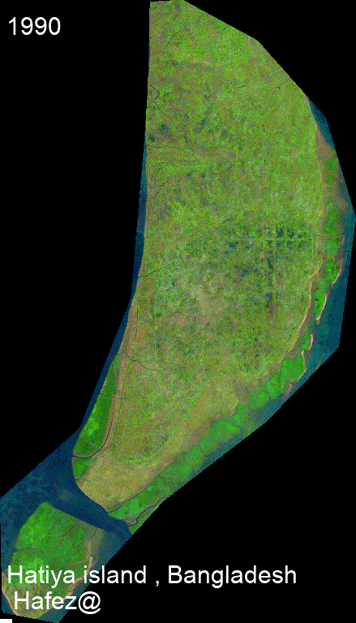

Experienced in Project Management,Observational Oceanography,Marine Community Ecology, Geoinformatics, Wildlife habitat management, Hydrology and Remote Sensing,
Strategic Planning, and Data Analysis , and problem solving with automation (Python, R, MATLAB, Julia, Google Earth Engine, ArcGIS, Adobe Illustrator, Excel).
I am passionate about physical Oceanographic research ,Marine Ecology, Coastal water dynamics, Aquatic wild habitats ,Coastal Development Research and Machine learning . I will be happy to be part of your Research Groups.
I have a Bachelor’s and Master's Degree in Oceanography from the Faculty of Marine Science and Fisheries,
University of Chittagong ,Bangladesh and Mississippi State University, USA and I was also an Exchange student at Florida Gulf Coast University, Florida, USA.
I earned my PhD from Mississippi State University, Mississippi, USA, with an expected graduation in May 2026 .
More information about my Research and Activities can be found at Education section.
Physical Oceanography Marine Ecology Remote Sensing GIS Machine Learning Python / R / Julia

Current Projects(*) and Completed Projects
Detection and tracking of mesoscale eddies in the Bay of Bengal using Satellite altimetry data *
Hydrologic and geospatial analyses to quantify surface-water connectivity of Lower Mississippi river and develop framework for evaluating tradeoffs between limiting invasion risks and maintaining hydrologic connectivity of oxbow lakes*
Applications of Machine learning in Computational Oceanographic Research *
Integrating Machine Learning and Remote Sensing for Long-Term Monitoring of Chl-a in Chilika Lake, India *
Simulation of the land use/land cover and land surface temperature change in the chittagong city corpoeration using QGIS*
Land use assessment and forecasting in the teknaf Upazila, Bangladesh.
Simulation of the future land use/land cover change in the Starkville, Mississippi,USA*
Future of the Irrawaddy Delta with decreasing fluvial sediment supply and SLR
Marine Spatial Planning to support Integrated Coastal zone Management in Bangladesh *
Spatio–temporal variability of SST,SSS and Primary productivity in the Bay of Bengal.
A case study for the Biodiversity Assessment and land cover in the Sundarbans mangrove forest.
Collaborative Research: The tropicalization of Western Atlantic seagrass beds (Volunteered in Dr. James Douglass(jdouglass@fgcu.edu)'s marine ecology lab )
Status and Future Trends of the Bangladesh Coastal Zone Management and coastal risks.
Present status of impacts of climate change and adaptations in Bangladesh coastal areas.
Vegetation and Land cover analysis in response to Precipitation and land surface temperature
of Oktibbeha County of Mississippi, USA
Integrated Management of Coastal Resources of Saint Martin’s Island in Bangladesh.
Google Scholar total citations 475, h-index: 7, and i10-index: 6, scholar.google.com [3/5/2026]
My Activities at a Glance
Oceanographic Research
I study the physical and biological dynamics of the ocean — from satellite-derived sea surface temperatures to coastal upwelling and deep-ocean circulation. My core focus areas include:
Ocean Remote Sensing & Satellite Data Analysis
Physical Oceanography & Ocean Dynamics
Bio-optics & Ocean Productivity
Coastal Hazards, Climate Change & SDM
Estuarine Processes & Aquatic Wildlife Habitats
Marine Biodiversity, Ecosystem Modeling
Remote Sensing Marine Ecology Ocean Dynamics
Nature Conservation & Ocean Literacy
Conservation is not merely about protecting ecosystems — it is about building a sustainable relationship between people and nature. I have conducted conservation research along the coastal areas of Bangladesh and actively promote Ocean Literacy through education and outreach.
I co-founded BGFBD, an initiative dedicated to coastal biodiversity and community-based conservation in Bangladesh.
Oceanography today is data-intensive. I combine scientific programming with geospatial tools to analyze, model, and visualize ocean and coastal data at scale.
Travel has shaped my perspective as both a scientist and a human being. Experiencing different cultures, coastlines, and ecosystems has deepened my appreciation for the ocean and the communities that depend on it.
Places visited: USA (Washington DC, Florida, New York, Mississippi), UAE (Dubai), Qatar, and coastal regions of Bangladesh — including Saint Martin Island, Cox's Bazar, and the Sundarbans Mangrove.
10+ Cities Coastal Fieldwork
Education
Jan 2024 – Present
Doctor of Philosophy (PhD) — Earth & Atmospheric Sciences
Mississippi State University, Starkville, MS, USA
Dissertation: Integrated Assessment of Water Quality Dynamics in the Western Mississippi Sound — Combining Field Observations, Remote Sensing, Material Transport, and Phytoplankton Community Structure.
Key coursework: Geodatabase, Philosophy & Ethics, GIS Research Applications, Quantitative Analysis of Climate Data, Simulation of Biological Systems.
Outputs: Multiple peer-reviewed publications, calibrated SWAT+EFDC models, CNN-based workflows for Imaging FlowCytobot. GPA 4.0 (all semesters).
Master of Science (MS) — Wildlife, Fisheries & Aquaculture
Mississippi State University, Starkville, MS, USA
Thesis focused on geospatial data analysis and developing a management framework to limit Silver Carp invasion across the Lower Mississippi Alluvial Valley. Worked with USGS Cooperative Fish and Wildlife Research Unit.
Florida Gulf Coast University (FGCU), Fort Myers, FL, USA
Conducted research under Dr. Felix Jose (Physical Oceanography), Dr. James Douglass (Marine Ecology), and Dr. Tosi. Field work at the Keys Marine Laboratory — seagrass, coral reef, and fish species identification; benthic sampling in the Gulf of Mexico and Atlantic Ocean.
Marine EcologySeagrass ResearchField Oceanography
2012 – 2018
Bachelor's & Master's — Oceanography
University of Chittagong, Chittagong, Bangladesh
Comprehensive training in physical, chemical, biological, and geological oceanography. Research focused on coastal zone management, climate change impacts, and ocean remote sensing applications in the Bay of Bengal.
OceanographyCoastal ScienceMarine Biology
Research & Professional Experience
Aug 2025 – 2026
Graduate Teaching Assistant
Mississippi State University, Starkville, MS, USA
Served as teaching assistant for multiple remote sensing and GIS courses, supporting a combined enrollment of 98+ students across four course sections.
Remote Sensing of the Physical Environment — 17 students (Fall 2025)
Maps and Remote Sensing — 2 sections, 39 students (Fall 2025)
Advanced Remote Sensing — 12 students (Spring 2026)
Maps and Remote Sensing — 2 sections, 30 students (Spring 2026)
Remote Sensing GIS / Cartography Teaching
Jan 2024 – May 2025
Graduate Research Assistant
Mississippi State University, Starkville, MS, USA
Modeled and assessed seasonal trends in Mississippi Sound water quality, investigated the dynamics of freshwater inflow into the Sound, and evaluated the suitability of Sound waters for sustainable oyster production. Funded by the U.S. Department of the Treasury.
Water Quality ModelingFreshwater DynamicsOyster Habitat Assessment
2024 – 2027
Graduate Research Assistant
Geosystems Research Institute (GRI), Mississippi State University, MS, USA
Leveraging cutting-edge remote sensing technologies and hydrodynamic modeling to advance surface-to-ground water quality assessment in the Mississippi Coastal region. Developing and implementing scalable algorithms to process large satellite and drone datasets. Coupled SWAT and EFDC models; designed CNN-based workflows for plankton classification using an Imaging FlowCytobot.
Water Quality Remote SensingSWAT + EFDC ModelingMachine Learning Project
May – Aug 2023
HPC Summer Research Intern
Geosystems Research Institute / MSU + USDA, Starkville, MS, USA
Joined an elite cohort of eight students from universities across the USA to work with a High-Performance Computer (Supercomputer) on cutting-edge machine learning projects. My project classified cattle behavior using machine and deep learning (VGG-19, custom CNN) with HPC facilities.
Deep Learning (CNN)HPC / SupercomputingPython Project
2022 – 2023
Graduate Research Assistant
Mississippi USGS Cooperative Fish and Wildlife Research Unit, MSU, MS, USA
Investigated hydrological connectivity patterns in oxbow lakes of the Lower Mississippi Alluvial Valley using remote sensing and GIS. Developed innovation for quantifying floodplain connectivity dynamics; presented findings at the AFS Annual Meeting and MSU Graduate Research Symposium.
Wildlife Conservation Society (WCS) Bangladesh Program, Bangladesh
Managed marine databases; quality-checked, summarized, and extracted GPX data. Developed the Marine Spatial Monitoring and Reporting Tool (SMART) for the Bay of Bengal. Co-authored the Sharks and Rays of Bangladesh field guide. Assisted with MPA management plans and marine spatial planning.
SMART tool development for the Bay of Bengal region
Sharks & Rays ID guide development and data collection SOP
Compiled secondary information for MPA management plans
Advanced data analysis, modeling, and geospatial visualization
My research work has reached significant milestones in the field of oceanography and marine science.
0
Publications
0
Conference Presentations
0
Research Projects
0
Awards & Honors
Hafez Ahmad
I am a young Oceanographer.I am passionate about physical Oceanographic and Marine Ecology Research and coastal Development Research.
I use Python and R, MATLAB ,Julia,and C++ for data analysis, modeling, and visualization.I like do research and work with Physical Oceanography
, Ocean productivity, Biological effects on Ocean's optical properties), Coastal zone management, climate change
, Coastal Climate hazards and distribution of temperature and salinity, Coastal, Deep-ocean processes,
Acoustic Telemetry for Studying Migration Movements as well as computational Oceanography
.I am currently working on Machine learning applications, Marine spatial Planning, and Ocean Tracking and detection.
Completed Offline and online Training/ Courses
Training on “Regression and Hotspot analysis, 2018 ” at University of Dhaka, Bangladesh
Some of the themes addressed are in this practical Training :
Basic concepts of Regression and Hotspot analysis
Geospatial Data generation using ArcGIS 10. 5
Practical ways to identification of Crime- hotspot and uses geospatial Regression
"First Aid” in American corner, Chittagong, Bangladesh
Some of the themes addressed are in this practical Training :
Basic concepts of First Aid
Practical uses of the some first aid valid methods and instruments
Fishery Oceanography for Future Professionals
, during 16th - 20th November, 2020
Organized by International Training Centre for Operational Oceanography
(ITCOocean) ESSO-INCOIS, Hyderabad, India.
covered topics are
Oceanographic Processes
Nutrients, Productivity and Nutrient Cycles
Acoustics
Telemetry and e-DNA
Fish life-cycle and Oceanographic Processes
Mariculture and Oceanography
Anthropogenic Threats to Fishery Resources
SDGs for Youth: My Goal, My Responsibility” by Sudoksho and EMK Center, U.S. Embassy, Dhaka , Bangladesh
Participation in “Social Leadership Hackathon”
Geospatial Applications for Disaster Risk Management
Organized by United Nations Office for Outer Space Affairs, Centre for Space Science and Technology
Education for Asia and the Pacific (Affiliated to the United Nations) and Indian Institute of Remote Sensing (IIRS) under
Indian Space Research Organisation, Department of Space, Government of India
"Climate Change in practice and becoming global citizens for a sustainable society” by the Asian pacific center of education for international understanding and Ban ki-moon center.
Geospatial and Environmental Analysis by University of California, Davis
Julia Scientific Programming [with honors ] by the University of Cape Town
Introduction to GIS: Manipulating and Mapping Geospatial Data in R
ARSET - Species Distribution Modeling with Remote Sensing
Biodiversity Applications for Airborne Imaging Systems,2023 ” by NASA Applied Remote Sensing Training Program (ARSET)
Lesson covered in this course
Overview of Species Distribution Models (SDMs), species data, predictors , model development
Using Wallace to Model Species Niches and Distributions
SDM comparisons and post-processing for conservation decision-making and beyond
Additional SDM Tools and Techniques, ASP Projects, and Summary
Circuitscape and Fisheries and Climate Toolkit (FaCeT)
Learned Advanced python Concepts
R programming hands-on specialization for data science
Become an expert with ESRI's GIS software ArcGIS desktop
Machine Learning Bootcamp™: Hand-On Python in Data Science
Ecology: Ecosystem Dynamics and Conservation
Large Marine Ecosystems: Assessment and Management
Data Analysis with Python
R Programming
Data Analysis with R Programming
Linear Regression and Modeling
Principles of Ocean remote sensing & its applications during July 26 - 30, 2021, Hyderabad, India
Learnings from this course
Principles of remote sensing
Thermal remote sensing & its applications
Ocean Colour remote sensing & its applications
Microwave remote sensing & its applications
Remote Sensing Data Sources and accessibility
Summer program on Climate Change: Challenges and Issues for the Earth Sciences “Institut Pierre-Simon Laplace Climate Graduate School", France
Some of the themes addressed are in this program :
The Climate System: a few decades that changed many things
New Trends in Climate Modeling: anticipating the future
Impacts and feedbacks of marine biogeochemistry and diversity
Exploring Earth observing systems and Models
The solar system: the sister planets of the Earth
Recent news from past climate
Preparing to Manage Human Resources
Marine Spatial Planning: balancing social, economic, cultural, and ecological objectives
Developing-your-emotional-intelligence
Excel 2016 Essential Training
MULTIVARIATE ANALYSIS in ECOLOGY (& other Sciences) using PRIMER version 7-2022
Some of the themes addressed are in this course :
Introduction to multivariate data; the data matrix, measures of resemblance, and
transformations
Multivariate regression; the regression model, the residuals, and the
prediction interval
clustering, Principal Component Analysis, and dimensionality reduction
Parametric and Nonparametric Multidimensional scaling, Second stage analyses, Taxonomic resemblance
Tests: RELATE, ANOSIM, BEST, SIMPER, SIMPROF ,BVSTEP and PERMANOVA
Project-management-foundations and Cert Prep: Project Management Professional (PMP)
I am working for Geosystems Research Institute from 2024 to 2027 as Graduate Research assistant.
Focus on leveraging cutting-edge remote sensing technologies and hydrodynamic modeling to contribute to surface to ground water quality
assessment in the dynamic environment of the Mississippi Coastal region. Skilled in harnessing data from satellite sensors
and drone imagery to derive meaningful insights into environmental changes. Adept at developing and implementing algorithms
to process large datasets,
enabling accurate analysis and interpretation of water quality parameters. Project
I worked for Mississippi USGS Cooperative Fish and Wildlife Research Unit from 2022 to 2023 as Graduate Research assistant. Project
In the meantime, I successfully finished two months research Internship under Mississippi State University (MSU), the Geosystems Research Institute (GRI), and the United States Department of Agriculture (USDA) Project .
I worked (Oct 2020- NOV 2021) for Wildlife Conservation Society(WCS) Bangladesh Program as A Marine Data Management officer, WCS Bangladesh
WCS is a non-governmental organization headquartered at the Bronx Zoo in New York City, that aims to conserve the world's largest wild places.
And WCS Bangladesh conducts cutting-edge wildlife science. WCS then shares new knowledge with the local communities and government agencies through innovative outreach. My Responsibilities were
Entered data, quality check, summarized,GPX data extraction and generated descriptive statistics for WCS BD
marine data bases in excel and other software programs according to a standardized format.
Assisted with advanced data analysis and modeling and generate maps and graphs for
reports and presentations.
Marine Spatial Monitoring and Reporting Tool development for Bay of Bengal region: SMART
Ensured secure data storage and support documentation.
Development of Sharks and Rays ID guide and Standard working procedure for Data collection
Assist with improving data collection, data entry and image processing protocols, and
new data analysis tools.
Compiled and reviewed secondary information for developing MPA management plans,
species assessments and marine spatial plans.
Provided support to the Marine Conservation Team and other WCS BD programs as
necessary.
I worked (May 2023- August 2023) for Geosystems Research Institute, GRI, HPC
I joined an elite group of eight students from different academic backgrounds and universities across the United States to work with a High-Performance Computer (aka Supercomputer) for cutting-edge machine learning projects!
This incredible opportunity allowed us to tap into the immense power of supercomputers and fosters collaboration and innovation among bright minds from diverse fields. Together, we pushed the boundaries of computing and drive groundbreaking advancements in our respective areas of expertise.
My project focused on classifying cattle behavior using machine and deep learning techniques with the aid of High-Performance Computing facilities.
Project link
I use mainly Python,Julia and R, MATLAB ,Excel and C++ for data analysis and modeling, Geographic information system, remote sensing and visualization, Sometime, I use GUI based open source softwares and commercial softwares for the Professional works.
. additionally I like to write about the environment.
If you appoint in your work, I will do it very efficiently. I am diligent in my approach to ensuring that the work I do is completed to the highest standard.
I like to work closely with my clients to ensure that they receive the best possible service making your ideas a reality through an easy and efficient process
resulting in repeat business and a lasting relationship with the focus of understanding your business vision.
Hello World! My services include but not limited to the following:-
Desktop and Web Mapping and GIS such
Mapping of the study area
Density mapping
Contour map
Bathymetric mapping
Road mapping
Flood mapping and surface water dynamics
Hydrographic mapping
Topographic mapping
Hydrology connectivity Mapping
Volumetric mapping
Landslide Analysis
Digital Elevation Mapping
Landcover and landuse Map
Predictive Map with Machine learning and Deep learning
Land cover and change Map, Benthic Habitats classification and Mapping
choropleth map
Different indices based map like NDVI, NDWI, LDI etc.
Tracking Map
Hotspot analyses and Mapping
Sptial Regressional Mapping
Multidimentional data based Map
Ocean current Mapping
Spatial Bayesian analysis
Geo Data analysis , visualization and Modeling using ArcGIS,R,Python, QGIS, GRASS, SAGA.
Species Distribution Modeling with R/ ArcGIS
I have practical and research experience on species distribution Modeling.
I can do the using following method including machine learning models using R/ ArcGIS.
1. Maximum entrony [Maxent]
2. Generalized linear models
3. Boosted Regression Trees
4. Random forest
5. Support vector machine
Spatial Programming and in GIS using Python and R.
Sourcing and downloading Satellite Images, Satellite image classification including supervised and unsupervised.
GIS data file conversion — Convert from Shapefile to KML, GML, CSV, GeoJSON, etc.
Geo-spatial data collection and mining.
GIS data API — Google Maps API, NASA API, etc.
Dashboard with python (dash)and R (shiny)
Animation based Plotting in any format
dashboard w and digital story Map with ArcGIS
Geocoding, Tracking analysis and distribution Modeling
Making Google Earth Engine App
Data extraction from Google Earth Engine
Machine learning with Google Earth Engine App
Analyzing Acoustic data
Text data analysis and visualization
Whatsapp Text data analysis and visualization
Online content Writing and Development on environmental and Marine science
My Google scholar citations
Google scholar is popular way to showcase paper and citation.
Professional Membership
The Oceanography Society (Student member)
American Fisheries Society Mississippi State Sub-unit (Secretary-2022)
IEEE Student Membership
Blue Green Foundation Bangladesh (Founding member)
Education in the United States of America and Bangladesh
Doctor of Philosophy (January 2024-May 2026)
Department of Geosciences, Mississippi State University, Starkville, Mississippi, Expected Graduation in May 2026
• Major in Earth and Atmospheric Sciences
• Dissertation: Integrated Assessment of Water Quality Dynamics in the Western Mississippi Sound: Combining Field Observations, Remote Sensing, Material Transport, and Phytoplankton Community Structure
• Coursework: Geodatabase, Philosophy and Ethics, GIS research applications, Quantitively analysis of climate data, Simulation of Biological Systems.
• Outputs: One publication (3 under revision), calibrated models, and novel algorithms. Developed scalable pipelines for water quality, coupled the SWAT and EFDC model and designed CNN-based workflows for Imaging FlowCytobot
• GPA (4.0 for Spring, Fall 2024, & Spring, Fall 2025)
I was a graduate student at Mississippi State University in Mississippi, USA, where I pursued a master's degree in wildlife, aquaculture, and fisheries, with a focus on geospatial data analysis and developing a management framework to limit silver carp invasion across the Lower Mississippi Alluvial Valley. I was a student of Florida Gulf Coast University (FGCU), Florida, USA, where I worked with Dr. Felix Jose, Dr. James Douglass and Dr. Tosi on great research activities.
My Research activities and publications (* submitted):
PEER-REVIEWED PUBLICATIONS (25)
Ahmad, H., Dash, P., Ahmad, H. et al. (2026). Ensemble machine learning and landsat observations reveal seasonal and spatial dynamics of water quality in a river-influenced estuarine system. Science of Remote Sensing.
Ahmad, H. High-Resolution Spatiotemporal Monitoring of Water Quality and Trophic Status in Bay St. Louis Using Sentinel-2 NDCI Time Series on Google Earth Engine. Transactions in GIS 29, no. 8: e70166. https://doi.org/10.1111/tgis.70166
Ahmad, H. Discharge–Chlorophyll-a Relationship and Seasonal Variability in the Northern Gulf of Mexico. Ocean-Land-Atmos Res. 2025;4:0120. DOI:10.34133/olar.0120
H. Ahmad, et al.,2025.Long-Term Trends and Seasonal Drivers of Water Quality in US Southern Coastal National Reserves: Unraveling the Impacts of Climate Change*
H. Ahmad et al.,2024.Mapping the Dynamics of Particulate Organic Carbon: Satellite Observations of Coastal to Shelf Variability in the Northeastern Gulf of Mexico link
Ahmad, H.; Jose, F.; Dash, P.; Jhara, S.I. (2025) Detection, Tracking, and Statistical Analysis of Mesoscale Eddies in the Bay of Bengal. Oceans. https://doi.org/10.3390/oceans6030052
Ahmad, H., Jose, F., Dash, P., Shoemaker, D. J., & Jhara, S. I. (2025). Hypoxia in the Gulf of Mexico: A machine learning approach for evaluation and prediction. Regional Studies in Marine Science, 104363. https://doi.org/10.1016/j.rsma.2025.104363
Ahmad, H., Jose, Felix, MM Nabi; Shakila Islam Jhara, Frank Juma Ong'ondo (2025). Land Use and Land Cover Dynamics of Irrawaddy Delta: Remote Sensing Analysis and Future Projection. Remote Sensing Applications: Society and Environment. https://doi.org/10.1016/j.rsase.2025.101607
Islam, M. S., Dash, P., Liles, J. P., Ahmad, H., Nur, A. M., Panda, R. M., ... & Moorhead, R. J. (2025). Spatiotemporal dynamics of cyanobacterial blooms: Integrating machine learning and feature selection techniques with uncrewed aircraft systems and autonomous surface vessel data. Journal of Environmental Management, 381, 124878. https://doi.org/10.1016/j.jenvman.2025.124878
Ahmad, H, F. Jose, Dash, P., D. J. Shoemaker, and Jhara, S.I. (2025). Machine Learning-Based Estimation of Chlorophyll-a in the Mississippi Sound using Landsat and Ocean Optics Data. Environmental Earth Sciences.
Ahmad, H, Miranda, LE, Corey G. Dunn, Colvin, Mike, and Dash, P. (2025). Confluence of time and space: an innovation for quantifying dynamics of hydrologic floodplain connectivity with remote sensing and GIS. River Research and Applications. doi.org/10.1002/RRA.4426
Ong'ondo, F. J., Ambinakudige, S., Malaki, P. A., Ahmad, H., Meng, Q., Chesire, D. K., ... & Said, Y. (2025). Monitoring and Prediction of Land Use and Land Cover Using Remote Sensing and CA-ANN. Rangeland Ecology & Management, 102, 160-171.
Ong'ondo, F. J., Ambinakudige, S., Malaki, P. A., Njoroge, P., & Ahmad, H. (2025). Using GIS and remote sensing to classify land cover types and predict grassland bird abundance in Nairobi National Park. International Journal of Geoheritage and Parks, 13(1), 92-101. doi.org/10.1016/j.ijgeop.2025.02.003
Islam, M. S., Dash, P., Nur, A., Ahmad, H., Lone, F. A., & Hossain, M. S. (2025). Satellite monitoring of surface phytoplankton functional types in the Gulf of Mexico using the PhytoDOAS method. Ecological Informatics, 85, 102954. doi.org/10.1016/j.ecoinf.2024.102954
Ahmad, H., Jhara, S.I. (2024). Mapping the Dynamics of Particulate Organic Carbon in the Bay of Bengal Using Satellite Remote Sensing. POC Ocean Science Journal.
Ahmad, H., Dash, P., Panda, R. M., Islam, M. S., & Moorhead, R. J. (2024). Integrating machine learning and remote sensing for water quality assessment of Chilika Lagoon, India. Remote Sensing Applications: Society and Environment.
Ahmad, H., Jose, F., & Shoemaker, D. J. (2024). Mapping, Dynamics, and Future Change Analysis of Sundarbans Delta Using Cellular Automata and Artificial Neural Network Modeling. IEEE Journal of Selected Topics in Applied Earth Observations and Remote Sensing, 17, 5594–5603. doi.org/10.1109/JSTARS.2024.3367116
Ahmad, H., Jose, F., Bhuyan, M. S., Islam, M. N., & Dash, P. (2024). Seasonal influence of freshwater discharge on spatio-temporal variations in primary productivity, sea surface temperature, and euphotic zone depth in the northern Bay of Bengal. Acta Oceanologica Sinica, 43, 1–13. doi.org/10.1007/s13131-023-2254-y
Ahmad, H., Jose, F., Islam, M. S., & Jhara, S. I. (2023). Green Energy, Blue Economy: Integrating Renewable Energy and Sustainable Development for Bangladesh. Marine Technology Society Journal. doi.org/10.4031/MTSJ.57.4.4
Ahmad, H., Abdallah, M., Jose, F., Elzain, H. E., Bhuyan, M. S., Shoemaker, D. J., & Selvam, S. (2023). Evaluation and mapping of predicted future land use changes using hybrid models in a coastal area. Ecological Informatics, 78, 102324. doi.org/10.1016/j.ecoinf.2023.102324
Ahmad, H. (2022). Machine learning applications in oceanography. Aquatic Research, 2(3), 161-169. doi.org/10.3153/AR19014
Ahmad, H., & Jhara, S. I. (2019). Present status of impacts of climate change and adaptations in Bangladesh coastal areas. Social Change: A Journal for Social Development, 9, 71-81. link
Ahmad, H. (2019a) ‘Applications of Remote Sensing in Oceanographic Research, International Journal of Oceanography & Aquaculture, 3(1), pp. 1–9. doi: 10.23880/ijoac-16000159. link
Ahmad, H. (2019b) ‘Bangladesh Coastal Zone Management Status and Future Trends’, Journal of Coastal Zone Management, 22(1), pp. 1–7. doi: 10.4172/2473-3350.1000466. link
Ahmad, H. et al. (2026). Spatiotemporal Analysis of Water Quality in the Western Mississippi Sound Using High-Frequency Data from an Autonomous Surface Vessel. Estuaries and Coastal Shelf Science.
Ahmad, H. et al. (2026). Integration of SWAT and EFDC Models for Hydrodynamic Simulation and Material Flux Assessment in the Mississippi Sound Estuarine System. Environmental Modelling & Software.
Ahmad, H. et al. (2026). Harmful algal toxins and their producing species composition using the Imaging FlowCytobot. Harmful Algae.
Ahmad, H. et al. (2025). Modeling land cover dynamics across wildlife management areas and surrounding landscapes to inform conservation planning. Environmental Management.
Ahmad, H. et al. (2025). AI-driven geospatial modeling of urban expansion and environmental impacts. Remote Sensing in Earth Systems Sciences.
Ahmad, H. (2025). Spatial and Temporal Patterns of Vegetation Greenness in Response to Climate Variability and Land-Use Changes in the Irrawaddy Delta. International Journal of Applied Earth Observation and Geoinformation.
Ahmad, H., Jose, Felix, Dash, P. Bhuyan, Md. Simul. (2025). Predictive Analysis of Land Use Modeling for Chittagong, Bangladesh Utilizing Remote Sensing and Machine Learning. Remote Sensing in Earth Systems Sciences.
Ahmad, H, et al. (2025). Long-Term Trends and Seasonal Drivers of Water Quality in US Southern Coastal National Reserves: Unraveling the Impacts of Climate Change. Estuarine, Coastal and Shelf Science.
Ahmad, H, et al. (2025). Estimating algal bloom and trophic status in Lake Okeechobee, Florida, using VIIRS and OCI/PACE satellite imagery and Machine learning.
Frank Juma Ong'ondo, Shrinidhi Ambinakudige, Philista Adhiambo Malaki; Hafez Ahmad; Qingmin Meng; Kuria Antony. (2025). Land cover change and future projection analysis for Nairobi National Park and adjacent landscapes, using GIS, remote sensing, and cellular automata-artificial neural network. Remote Sensing Applications: Society and Environment.
BOOKS / CHAPTERS:
Elisabeth Fahrni Mansur, G M Masum Billah, Nadim Parves, Robiul Kauser, Mohammad Shamsuddoha, Ashik Jahan Galib, Naim Khandakar, Hafez Ahmad, Rasel Mia, Md. Arafat Rahman Khan and Brian D. Smith (2022). Sharks and Rays of Bangladesh: A guide to identifying protected species and their commonly traded parts. Bangladesh Forest Department and Wildlife Conservation Society, Bangladesh.
PROCEEDINGS AND CONFERENCE ARTICLES:
Md. Mazaharul Islam, Hafez Ahmad, Mohammad Saydul Islam Sarkar, Jose Felix. Sustainable Coastal Zone Management in Bangladesh: A Blue Economy Perspective through Remote Sensing Data. Taiwan International Conference on Ocean Governance 2023 (TICOG 2023).
H. Ahmad and F. Jose, "Mapping, Dynamics, and Future Change Analysis of Sundarbans delta using Cellular Automata and Artificial Neural Network Modeling," IGARSS 2023 - 2023 IEEE International Geoscience and Remote Sensing Symposium, Pasadena, CA, USA, 2023, pp. 2600-2602, doi: 10.1109/IGARSS52108.2023.10282057.
Md. Mazaharul Islam, Hafez Ahmad, Mohammad Saydul Islam Sarkar, Jose Felix. A comprehensive framework for harnessing blue economy benefits in Bangladesh's central coastal zone. 9th International Conference on Water and Flood Management-ICWFM 2023.
H. Ahmad and F. Jose, "Seasonal influence of freshwater discharge on primary productivity and euphotic depth in the northern Bay of Bengal," IGARSS 2023 - 2023 IEEE International Geoscience and Remote Sensing Symposium, Pasadena, CA, USA, 2023, pp. 4023-4024, doi: 10.1109/IGARSS52108.2023.10281755.
ABSTRACTS/PRESENTATIONS/POSTERS:
Ahmad, H., & Dash, P. Monitoring Estuarine Dynamics Using Remote Sensing, Machine Learning, and Coupled Hydrodynamic–Watershed Modeling: A Multi-Method Approach. AGU 2025. New Orleans, Louisiana.
Dash, P., & Ahmad, H. Water Quality Time Series of Mississippi Sound: Insights from Satellite and Unmanned Aerial Systems Imagery and Autonomous Surface Vessel Data. 14th International Symposium on Biogeochemistry of Wetland & Aquatic Systems, June 1-5, 2025, Baton Rouge, LA.
Ahmad, H., & Dash, P. Long-Term Water Quality Trends and Seasonal Drivers in the Western Mississippi Sound: A Remote Sensing and Machine Learning Approach. 14th International Symposium on Biogeochemistry of Wetland & Aquatic Systems, June 1-5, 2025, Baton Rouge, LA.
Devin M. Raburn, Hafez Ahmad, Patrick F. Allison Jr., Susan B. Adams, Zanethia C. Barnett, Ryan C. Garrick, Kenneth A. Sterling, Sara Cathey, Michael E. Colvin, and Corey G. Dun. Hidden in plain sight: high-resolution stream networks reveal habitats for petitioned burrowing crayfishes. 155th Annual Meeting of the American Fisheries Society, 2025. San Antonio, Texas.
Ahmad, H., & Dash, P. Remote Sensing and Machine Learning for Long-Term Water Quality Monitoring in the Western Mississippi Sound. Spring 2025 Graduate Research Symposium, Feb 15, 2025, Starkville, MS.
Ahmad, H., & Dash, P. Remote Sensing of Water Quality Parameters over Western Mississippi Sound by Using Sentinel-3 OLCI and Machine Learning. ASLO 2025, Charlotte, NC.
Md. Mazaharul Islam , Hafez Ahmad, Mohammad Saydul Islam Sarkar, Jose Felix. A comprehensive framework for harnessing blue economy benefits in Bangladesh’s central coastal zone. 9th International Conference on Water and Flood Management-ICWFM 2023.
Ahmad, H., & Dash, P. Modeling Hypoxia in the Gulf of Mexico: A Machine Learning Approach with Remote Sensing and Field Data. Fall 2024 Graduate Research Symposium.
Ahmad, H., Jhara, S.I. AI-Driven Approaches for Real-Time Satellite Data Processing and Analysis. NASA Accelerating Informatics for Earth Science, 2024.
Ahmad, H., Jose, F., Jhara, S. I. & Dash, P. Mesoscale Eddies and their Impact on Primary Productivity in the Northern Bay of Bengal. Ocean Sciences Meeting 2024 – AGU, New Orleans, Louisiana.
Ahmad, H., Jose, F., Jhara, S. I., & Dash, P. Hypoxia in the Northern Gulf of Mexico: A Comparative Analysis of Machine Learning Algorithms for Evaluation and Prediction. Ocean Sciences Meeting 2024 – AGU, New Orleans, Louisiana.
Ahmad, H., Jose, F., Jhara, S. I., & Dash, P. Eddy-driven Chlorophyll Concentration Variability in the Andaman Sea. Ocean Sciences Meeting 2024 – AGU, New Orleans, Louisiana.
Ahmad, H., Jose, F., Islam, M. S., & Jhara, S. I. Sustainable Development through the Synergy of Green Energy and Blue Economy in Bangladesh. 1st International Conference on Oceanographic 2024 (ICO-2024), BORI, Cox's Bazar, Bangladesh.
Hafez Ahmad, L. E. Miranda, Corey G. Dunn, Mike Colvin. Hydrological connectivity patterns in oxbow lakes of the Lower Mississippi Alluvial Valley. 153rd Annual Meeting of the American Fisheries Society, 2023.
Devin. M. Raburn, Hafez Ahmad, Patrick Allison Jr., Susan B. Adams, Zanethia C. Barnett, Ryan Garrick, Kenneth A. Sterling, Sara Cathey, Michael E. Colvin, and Corey G. Dunn. Uncharted waters: high-resolution stream networks reveal hidden habitats for petitioned headwater crayfishes. Southern Division of the American Fisheries Society, 2023.
Hafez Ahmad, L. E. Miranda, Corey G. Dunn, Mike Colvin. A systematic review on hydrological connectivity relevant to oxbow lakes. 49th Annual Meeting of the MSAFS, 2023.
Hafez Ahmad, L. E. Miranda, Corey G. Dunn, Mike Colvin. Assessing the Relationship between Hydrological Connectivity and Fish Assemblage in the Mississippi Alluvial Valley Floodplain. MSU Graduate Research Symposium, 2023.
Hafez Ahmad and Felix Jose. Spatiotemporal variability of SST and primary productivity in the Bay of Bengal. STEM Undergraduate Research and Internship Symposium, 2019, Florida Gulf Coast University, Florida, USA.
Kelly Chase, Hafez Ahmad, and James Douglass. 2019. Are invertebrates in tape grass beds as diverse and productive as those in seagrass beds? STEM Undergraduate Research and Internship Symposium, 2019, Florida Gulf Coast University, Florida, USA.
Hafez Ahmad, Shakila Islam Jhara, and Md. Wahidul Alam. 2021. Collaborative approach and role of the marine spatial planning to support integrated coastal zone management in Bangladesh. 8th International Conference on Water and Flood Management (ICWFM 2021), 29-31 March 2021, Dhaka, Bangladesh.
Field working in the Keys Marine Laboratory ,Florida , USA
The Keys Marine Laboratory (KML) is a full-service marine field station situated in the heart of the Florida Keys.
I I have spent three days there and done a lot of field works,lab works and research under the supervision of Dr. Douglass.
We dived into the Gulf of Mexico and the Atlantic Ocean and Identified Seagrass,Marine fishes and Coral reefs species.
Working in the Marine Ecology Lab
This is Dr. Douglass's Ecological lab. I spent about 86 hours in the last fall 2019 semester.
I worked on Benthic Samples and sorting with four graduate students of the Florida Gulf Coast University.
The Social leadership Hackathon is a half-day workshop where students from diverse backgrounds can come together to
learn and exercise leadership to solve a problem in their community.
Participants will work in small groups to focus on a particular local problem and work together as a team to create an action plan to solve it.
This was part of our Marine Ecology course. we collected fish and seagrass samples from different spots
of the Gulf of Mexico. then We identified all of them at the Laboratory.
Community Ecology :study of the interactions between species, such as mutualism, predation and competition, and the dynamics and structure of the community.
I did some analyses on Nonmetric multidimensional scaling using R.
This is a basic Marine Mammal and Sharks detection-based on convolutional neural network model from static images. The classification stage is now complete; after some months, I will update the entire code for mammal and shark detections.
At first , I used VGG-19 pretrained CNN model, then I built a new simple CNN model.
The convolutional Neural Network CNN works by getting an image, designating it some weightage based on the different objects of the image, and then distinguishing them from each other.
SWAT is a river basin-scale model developed to quantify the impact of land management practices on water,
sediment, and agricultural chemical yields in large complex watersheds with varying soils, land use, and management conditions
over long periods of time. My work with SWAT includes:
Watershed delineation and hydrologic response unit (HRU) definition
Calibration and validation using SWAT-CUP
Scenario analysis for climate change impacts on water resources
Integration with GIS for spatial analysis of model outputs
Assessment of best management practices (BMPs) for reducing nutrient loading
EFDC is a state-of-the-art hydrodynamic model that can be used to simulate aquatic systems in one, two, and three dimensions.
It has evolved into one of the most widely used and technically defensible hydrodynamic models in the world. In my research, I utilize EFDC for:
Simulating water circulation patterns in coastal environments
Modeling sediment transport processes
Analyzing water quality parameters including dissolved oxygen, nutrients, and contaminants
Studying thermal dispersion from industrial outfalls
Investigating the impacts of engineering modifications on estuarine systems
Ocean models are numerical models that simulate the physical processes governing ocean circulation. These models play a crucial role in
understanding ocean dynamics, climate patterns, and marine ecosystems. My experience includes working with:
Regional Ocean Modeling System (ROMS) - A free-surface, terrain-following, primitive equations ocean model used by the scientific community for a diverse range of applications
HYCOM (HYbrid Coordinate Ocean Model) - A data-assimilative hybrid isopycnal-sigma-pressure coordinate ocean model
Modular Ocean Model (MOM) - A numerical ocean model based on the hydrostatic primitive equations
NEMO (Nucleus for European Modelling of the Ocean) - A state-of-the-art modeling framework for oceanographic research and operational oceanography
My modeling work focuses on:
Simulating ocean circulation patterns in the Bay of Bengal and Gulf of Mexico
Analyzing mesoscale eddies and their impact on primary productivity
Studying the influence of freshwater discharge on coastal dynamics
Investigating climate change impacts on ocean circulation
Developing machine learning approaches to enhance model parameterizations
Ocean models represent a synthesis of our theoretical understanding, observational data, and computational capabilities. They enable us to explore complex ocean processes across various temporal and spatial scales, from local coastal dynamics to global circulation patterns. Through my research, I aim to advance our understanding of ocean processes and contribute to more accurate predictions of oceanographic phenomena.
GIS and Remote sensing
Remote Sensing (RS) has a wide range of applications in the field of physical, biological, coastal, and satellite oceanography. RS in Oceanographic research is the collection of oceanographic, monitoring of coastal and oceanic processes data, and analysis of various processes using space-borne and airborne sensors.
Each year in Bangladesh about 26,000 square kilometres (10,000 sq mi) (around 18% of the country) is flooded, killing over 5,000 people and destroying more than seven million homes. During severe floods the affected area may exceed 75% of the country, as was seen in 1998. This volume is 95% of the total annual inflow.
Application of remote sensing data in Oceanographic Research
Some important variables from Remote sensing Data
No.
Parameters
Satellite sensors
Uses
1
Sea surface temperature(SST)
MODIS,AMSRE,TMI
Helps in the study of climate change and weather forecasting.
2
Total suspended solids (TSSs)
DEIMOS-1,LANDSAT ,ASTER
Provides information on hydrodynamic modeling of the coast.
3
Sea surface salinity (SSS)
ESA Soil Moisture and Ocean Salinity (SMOS),SMAP SSS
Helps in monitoring salinity.
4
Chlorophyll content
SeaWiFS, IKONOS, IRS P4 OCM
Helps in monitoring phytoplankton blooms and concentration of phytoplankton.
5
Sea surface height (SSH),wind speed
Topex /Poseidon, ERS-1 , ERS-2
Helps in monitoring ocean currents,eddies and waves.
6
Surface current, front, circulation
POES/AVHRR, GOES/IMAGER, JASON-1
Helps in monitoring ocean currents,waves and Wave and current modeling.
7
Potential fishing zone
NOAA AVHRR, IRS OCM
Helps in monitoring fishing zone.
8
working
The relation between Covid-19 and Population density Map
Dhaka is the capital of Bangladesh.More than 19.5 million people live in Dhaka, the capital of Bangladesh. That's more than 23,234 people per square kilometer. most of the confirmed Covid-19 case are from this area
St. Martin's Island is a small island in the northeastern part of the Bay of Bengal,
about 9 km south of the tip of the Cox's Bazar-Teknaf peninsula,
and forming the southernmost part of Bangladesh.
it is enriched with numerous marine biotic and abiotic resources including many species of commercial fishes,
coral reefs, marine algae, mollusks, etc. that has been playing a significant role for the socio-economic development
of the islanders. the social-economic conditions of the local
community are completely dependent on both Marine resources and tourism.
Landuse land cover Map of the Sundarbans Mangrove Forest,Bangladesh
Sundarbans is the largest natural mangrove forest in the world. It lies between latitude 21° 27′ 30″ and 22° 30′ 00″ North
and longitude 89° 02′ 00″ and 90° 00′ 00″ East and with a total area of 10,000 km2,
60% of the property lies in Bangladesh and the rest in India .
Image classification methods
Random forest(RF) is a supervised learning algorithm.The "forest" it builds, is an ensemble of decision trees,
usually trained with the “bagging” method (Breiman, 2001).This algorithm is used for satellite image classification using google earth engine and landsat 8 imageries.
Breiman proposed RF in 2001 for classification and clustering. RF grows many decision trees for classification.
To classify a new object, the input vector is run through each decision tree in the forest

timelapse for small island for Bangladesh.
Surface water dynamics using Landsat Imageries
I love to teach Geospatial data analysis , Environmental and Marine data management with Python, R , Julia , with Specific softwares like
ArcGIS, QGIS ,saga GIS as well as Google Earth engine .
and I try to write regularly in the social media.I also provide screen-cast training.
If you need any sort of assistance , You can reach me at "hafezahmad100@gmail.com" .
I conduct online training via Zoom or Google meet and Skype. it is person to person Teaching one hour everyday [can be modified with Special demand].
I also provide online /offiline Geospatial consultancy services
Conceptual plans and feasibility studies
Detailed surveys and investigations
Flood Inundation analysis
Environmental data analysis and Mapping
Data migration, conversion, capture, rationalisation, validation
Geoimage[Raster] processing analysts
And Don't underestimate the value of personal experiences when it comes to online courses.
I provide online services and the courses are listed below .
course payment can be negotiable
Basic R/Python/julia programming
Advanced R/Python programming for Data analysis and Visualization
Big-data analytics with python
Parallel Computing with Julia / (Dask) python
Advanced R/python programming for Oceanographic Data analysis and Visualization
Ecological data analysis with Python/R programming
Advanced statistics with R programming
Geo-spatial data analysis with Python/R
Numerical analysis with Julia programming
Spatial analysis and Map Making with ArcGIS
land use and land cover Mapping with ArcGIS
Advanced ArcGIS online dashboard
Map Making and Modeling with QGIS
Data analysis with Matlab
Basic Equations solving with Matlab
Basic to advanced MS excel training
Online Academic Tutoring
If you think those topics are useful then you can email me with full requirements
or If you like to have a trial run, demonstration class that's awesome, I like to
run one hour trial on your specific topics class free of cost! I'll assure you that you will not to get panic in this or that topic.
I'll try to give you the real Information,
I'll teach you more easier way or what ever you choose, Of any problem you face i can solve that
Some online clients reviewed my works and their comments (from 2018-2021)
I also provide online services as freelance work. you can find me here [https://www.fiverr.com/hafezahmad] and you order your work on desired topics data analysis / data visualization /problems / research findings/ problem identification.
Predicted Seagrass across the world shallow ocean with Machine learning method ( Python3 package:- scikit learn). Alaskan pollock is one of the important species for commercial fishing in the north pacific ocean supporting various fisheries. To fish both efficiently and sustainably,
it is important to understand where shoals are most likely to be located. I am trying to apply geostatistics and build a model to temperature data to predict where to find them in the Bering Seahere the Link .
I have developed Covid_19 interactive Dashboard. It is extremely useful for the real time information.additionally , I made a SMS alert system for Covid-19 pandemic.
My contribution [notification system, dashboard, and prediction model]
I love to work in the field of Oceanography/Marine Science,Wildlife science,climate science,Ecology,Hydrology,Mapping (GIS, RS,hydrography) and Data analysis.If you think that I would be grateful if you would give me the possibility to join your research group and lab.I believe that with my scientific background, enthusiasm, curiosity, and determination, I could give a significant and valuable contribution to your research works and I also enjoy sampling, conducting fieldwork, and collecting data, you can contact with me at any moment.